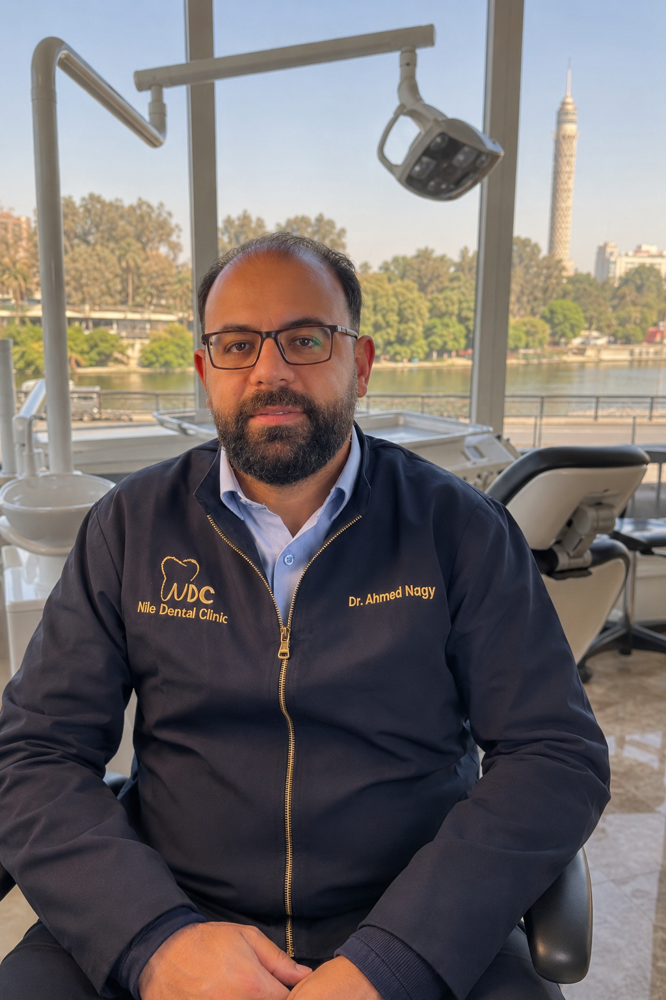
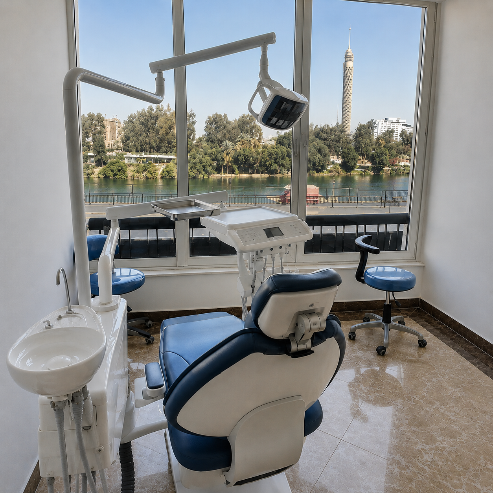

زراعة الأسنان
مسار علاجي يحتاج تخطيطا واضحا ومناقشة دقيقة للحالة قبل أي قرار.
مركز Nile Dental Clinic
في عيادة النيل لطب الأسنان يبدأ الاهتمام من الإصغاء الجيد، ثم تخطيط واضح، ثم تنفيذ دقيق يحترم راحة المريض وتفاصيل ابتسامته.

تظهر الخدمات الأساسية بوضوح، مع مساحة كافية لتفاصيل الطبيب وخطة العلاج عند إضافة المحتوى الحقيقي.
مسار علاجي يحتاج تخطيطا واضحا ومناقشة دقيقة للحالة قبل أي قرار.
حلول تعويضية وترميمية تصمم لاستعادة الشكل والوظيفة بأسلوب منظم.
اهتمام بتناسق الابتسامة ومظهرها الطبيعي وفق ما يناسب كل حالة.

صممت هذه المساحة لتقديم العيادة بصوت عربي واضح ومطمئن، مع إبراز شخصية الطبيب المؤسس وفلسفة الرعاية دون إضافة معلومات غير موثقة.
عند توفر الصور الحقيقية، يمكن أن تحمل هذه المنطقة لقطات المكان، تفاصيل الاستقبال، وغرف العلاج بطريقة دافئة تعكس هوية العيادة الفعلية.
مسار تأسيس هادئ يترك مساحة للوقائع الحقيقية عند تزويدها، دون تواريخ أو أرقام مخترعة.
تقديم دور الطبيب المؤسس وفلسفة العيادة بلغة دقيقة وقابلة للاستبدال بالمحتوى الحقيقي.
مساحة لشرح طريقة استقبال المريض وفهم احتياجه وخطوات التواصل قبل العلاج.
تأكيد على الوضوح والراحة والعناية بالتفاصيل دون ادعاءات تفوق أو نتائج مضمونة.
المزايا هنا تصف طريقة التجربة، لا أرقاما أو وعودا طبية غير موثقة.
لغة مبسطة تساعد المريض على فهم الخيارات والخطوات المتوقعة.
تجربة مصممة لتقليل التوتر وإبقاء التواصل هادئا ومنظما.
من عرض الخدمات إلى الدعوة للتواصل، كل جزء يخدم قرار الزائر.
نظرة واضحة على المسارات الأساسية التي يمكن تفصيلها لاحقا حسب المحتوى الحقيقي للعيادة.
قسم مخصص لشرح تقييم الحالة والتخطيط وخطوات التواصل دون تقديم وعود أو نسب نجاح.
اسأل عن الخدمةمساحة لعرض حلول التعويض والترميم بلغة سهلة، مع قابلية إضافة صور أو تفاصيل حقيقية لاحقا.
اسأل عن الخدمةتعريف هادئ بخيارات تحسين مظهر الابتسامة مع ترك القرار الطبي للمراجعة والاستشارة.
اسأل عن الخدمةتضاف فقط عند توفير خدمة حقيقية معتمدة من العيادة، دون اختراع قائمة خدمات.
بانتظار المحتوىيمكن ربط هذه المساحة لاحقا برقم الهاتف أو واتساب أو نظام الحجز عند توفير البيانات الرسمية.